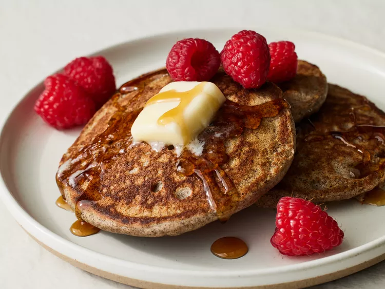

Buckwheat Pancakes

Description
These buckwheat pancakes came about for a few reasons: I get lots of requests for anything breakfast, I'm trying to cook
with more whole grains, and I heard someone say it's almost impossible to make a great pancake using 100% buckwheat flour.
Ingredients
- 1 cup buckwheat flour
- 1 1/2 teaspoons white sugar
- 1 teaspoon baking powder
- 1/4 teaspoon baking soda
- 1/4 teaspoon salt
- 1 1/4 cups buttermilk
- 1 large egg, beaten
- 1/4 teaspoon vanilla extract
- 1 tablespoon unsalted butter, or as needed
Steps
- Whisk buckwheat flour, sugar, baking powder, baking soda, and salt together in a medium bowl.
- Beat buttermilk, egg, and vanilla together in a large bowl.
- Pour flour mixture into buttermilk mixture; whisk until batter is thick and smooth. Let batter rest until bubbles form and batter relaxes, about 5 minutes.
- Melt butter on a griddle over medium heat. Drop batter by large spoonfuls onto the hot griddle and cook until bubbles form and the edges dry, 3 to 4 minutes.
Flip and cook until browned on the other side, 2 to 3 minutes. Repeat with remaining batter.
- Serve with berries.